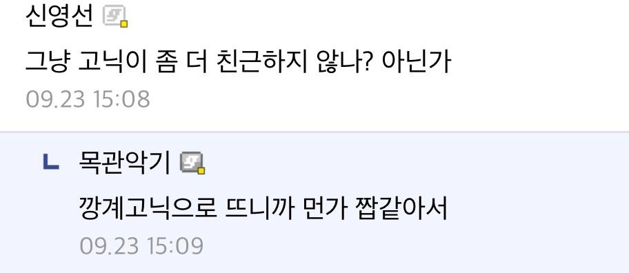
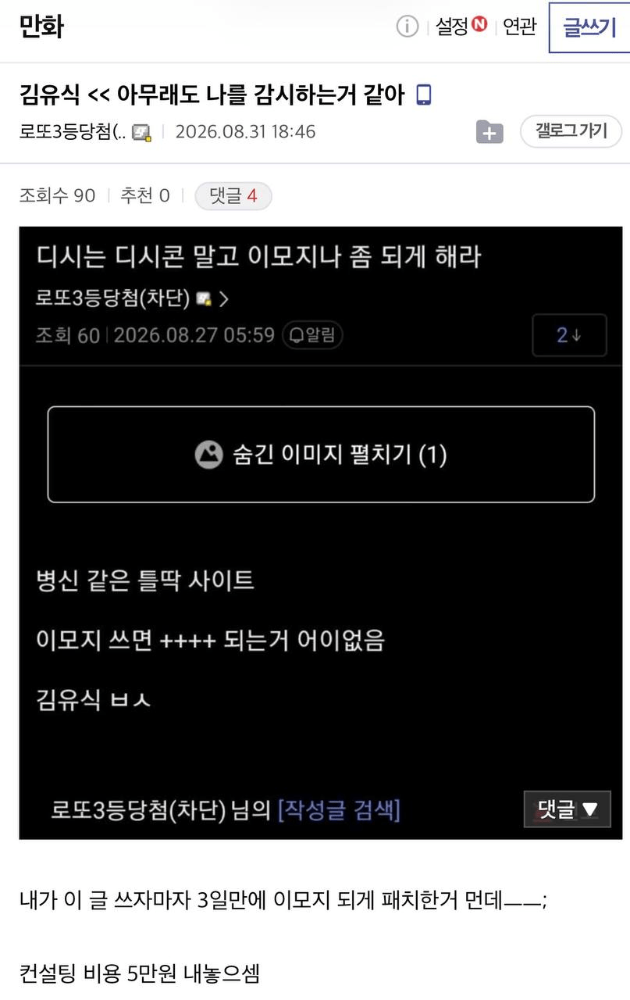
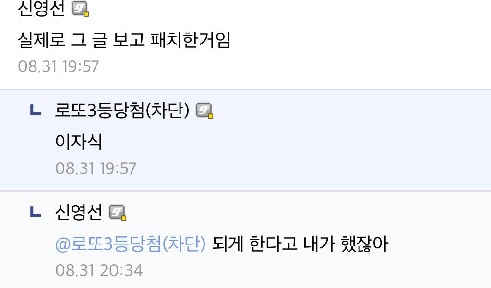
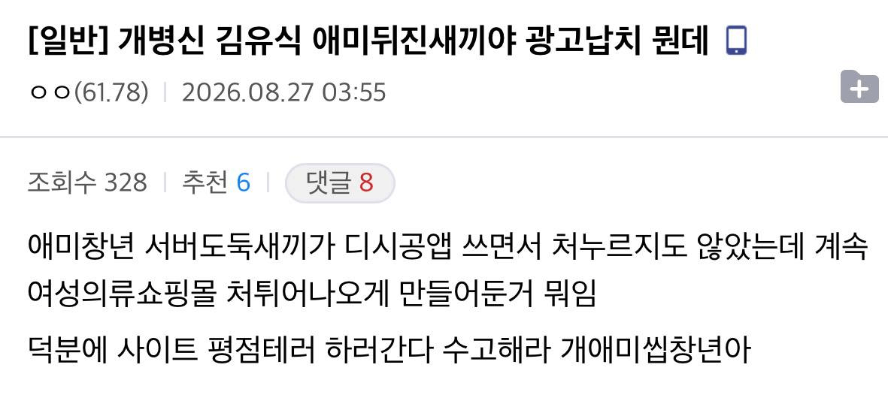
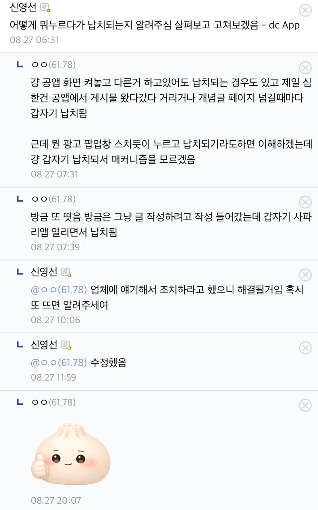

김유식을 언급하면 나타난다고 함





김유식을 언급하면 나타난다고 함
정상화는 신영선 ㄷㄷ
새로 온 사이버고아원장이 일을 잘한다..
저런 인재가 어째서...

주딱과 파딱은 뭔 차이임?
주딱이 최고인줄 알았는데....나무에 찾아봐야겠다
주딱은 반장 파딱은 부반장임
주딱 : 주메니져
파딱 : 부메니져
노딱 : 닉네임 중복 없이 유일한 유저
회딱 : 닉네임 중복 있거나 유동
대충 이런가 보네
노딱이 인증
회딱이 비인증일거임
욕은 김유식이 먹고
숭배는 신영선이 받는 상부상조의 관계
승희 씨발련아

신창섭
심영선
정상화는 신씨가 잘 하나보네
거 심영은 너무한거아니오
그분은 정상화가 아니라 중성화
신창섭의 본명은 김창섭이야..
알빠노
멀쩡한 사람을 왜 갑자기 심영으로 만드니?
서강대 최고 아웃풋 : 디시 주딱
주딱 오브 제너럴 ㄷㄷ
소강이라길래 어딘가 했는데 서강이였네 왜 seo가 아니라 so지?
호감고닉ㅋㅋㅋㅋㅋ
이사람은 진짜 신이네
호감실명전사 ㄷㄷㄷㄷ
레아 ㅎㅎ감고닉이네
ㅋㅋㅋㅋ패드립 난사하다가 문제 고쳐준다니까 공손하게 답하네
어이 할매지우개
ㄹㅇ 호감고닉이네 ㅋㅋㅋㅋㅋㅋㅋㅋㅋㅋ
주딱이 욕먹고 파딱이 일하는거 보니
디시 자체가 커다란 마이너갤러리구나
왜 진짜로 일을 잘하는데 ㅋㅋ
아 이제 이모지됨? ㅋㅋㅋㅋㅋ
아니 그냥 디시 현지인같은데 ㅋㅋㅋ
방금 불러봤는데 진짜 와서 댓글 달더라 ㅋㅋ
ㅈㄴ 활발하네 ㅋㅋㅋ